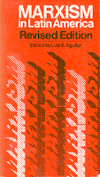

<body bgcolor="#FFFFFF" text="#000000" link="#0000FF" vlink="#CC0000" alink="#CC0000"><center><hr width="350" size="1" align="center" noshade>The history of Marxist ideas in Latin America, 1890-1977<hr width="350" size="1" align="center" noshade><p><a href="https://cdcshoppingcart.uchicago.edu/Cart/ChicagoBook.aspx?ISBN=9780877221067&&PRESS=temple" target="_top">Buy this book!</a> | <a href="https://cdcshoppingcart.uchicago.edu/Cart/Cart.aspx?PRESS=temple" target="_top">View Cart</a> | <a href="https://cdcshoppingcart.uchicago.edu/Cart/Cart.aspx?PRESS=temple" target="_top">Check Out</a></p><p></p></center><!--none//--><h1>Marxism in Latin America</h1>
<H2>Revised Edition</H2>
<h3>edited by Luis E. Aguilar</h3>
<P>cloth 0-87722-106-5 $27.95, <FONT COLOR=#990033>Out of Print</FONT>
<br>paper 0-87722-108-1 $9.95, <FONT COLOR=#990033>Out of Print</FONT>
<BR> 412 pp
4x7
</P><P>Although Marxism came late to Latin America, Marxist theories and practices have been of vast importance to Latin American countries, especially during the last decade. Luis Aguilar has revised and updated his 1968 anthology of articles by Latin Americans by adding eleven new articles, including writings by Fidel Castro on Cuba's Involvement in Angola and articles by and about Salvdore Allende and the failure of the Chilean socialist experiment. This new section is preceded by six groups of articles covering the time from 1890, when Marxist thought was first developing in Latin America, to the period of the Cuban Revolution and its aftermath and including the criticism and self-criticism of the sixties. The book is the only collection of primary and interpretive documents on Marxism by Latin Americans.
<BR>&nbsp;<h2>Excerpt</h2><P>Excerpt available at <a href="http://www.temple.edu/tempress">www.temple.edu/tempress</a></p>
<BR>&nbsp;<h2>Contents</h2><P>
<P>Introduction
<BR>Introduction to the Revised Edition
<P><B>Part I: Background, 1890-1920</B>
<BR>Chronology of Important Events &#149 Marx and Engels on Latin America &#149 On the Death of Karl Marx, <B>Jos&#233 Mill&#225</B> &#149 The Future Cuban Socialist Party, <B>Diego Vicente Tejera</B> &#149 Ideological Background of the Workers' Socialist Party of Puerto Rico, <B>Santiago Iglesias</B> &#149 Argentina and the Problems of Socialism, <B>Juan B. Justo</B> &#149 Socialism Is More than Marxism, <B>Emilio Frugoni</B>
<BR><B>Part II: The Emergence of the Communist Parties and the "Hard Line" Period, 1920-1935</B>
<BR>Chronology of Important Events &#149 The Dawn of Social Revolution in Chile, <B>Luis Emilio Recabarren</B> &#149 Yankeeland and Marxism, <B>Jos&#233 Carlos Mari&#225tegui</B> &#149 The Gaucho Legend and the Spirit of Our Revolution, <B>An&#237bal Ponce</B> &#149 The Organization and Immediate Claims of Forestry and Agricultural Workers, <B>The Confederation of Latin American Labor Unions</B> &#149 The Communist Party and the Cuban Revolutionary Situation, <B>The Communist Party of Cuba</B> &#149 The Situation of the Latin American Communist Parties on the Eve of the Seventh Congress of the Comintern, <B>The Communist International</B>
<BR><B>Part III: The Popular Front and World War II, 1935-1945</B>
<BR>Chronology of Important Events &#149 A Program of Action for the Victory of the Chilean Popular Front, <B>The Communist Party of Chile</B> &#149 Batista, Grau, and the Roads to National Unity, <B>Blas Roca</B> &#149 Brazilian Communists in the Fight for Democracy, <B>Lu&#237s Carlos Prestes</B>
<BR><B>Part IV: Cold War and New Crisis, 1946-1959</B>
<BR>Chronology of Important Events &#149 The End of the War and the New American Imperialism, <B>Rodney Arismendi</B> &#149 Consequences of Imperialist Penetration in Chile, <B>Julio C&#233sar Jobet</B> &#149 Oligarchies and the Agony of Bourgeios Democracy, <B>Antonio Garc&#237a</B> &#149 Crisis on the March, <B>Caio Prado, Jr.</B> &#149 The Left and the Socialist Revolution in Argentina, <B>Silvio Frondizi</B>
<BR><B>Part V: The Cuban Revolution and Its Aftermath, 1959-1968</B>
<BR>Chronology of Important Events &#149 Cuba, Historical Exception or Vanguard in the Anti-Colonial Struggle? <B>Ernesto (Ch&#233) Guevara</B> &#149 The Lessons of the Cuban Revolution, <B>Alvaro Mendoza D&#237ez</B> &#149 Dangers of Empiricism in Latin American Revolutions, <B>Jorge Abelardo Ramos</B> &#149 New Trends in Catholicism and the Policy of the Chilean Communist Parties, <B>Orlando Millas</B> &#149 The Chinese Line and the Latin American Communist Parties, <B>Victorio Codovilla</B> and <B>Rodney Arismendi</B> &#149 Problems of a United Democratic Front in Guatemala, <B>Jos&#233 Mill&#225</B> &#149 Has the Revolution Become More Difficult in Latin America? <B>Jos&#233 Manuel Fortuny</B> &#149 The Peruvian Revolution, <B>Luis F. de la Puente Uceda</B> &#149 The Duty of Marxist-Leninists and the Revolutionary Line, <B>Fidel Castro</B> &#149 Dilemma of Leadership: The Guerrilla, <B>Alfredo Fern&#225ndez</B> and <B>&#211scar Uanetti</B> &#149 Dilemma of Leadership: The Communist Party, <B>Joint Declaration of the Communist Parties of Colombia and Venezuela</B> &#149 Dilemma of Leadership: To Whom Does the Vanguard Belong? <B>Luis Sanchez</B>
<BR><B>Part VI: From the Peruvian Military Revolution to Cuban Intervention in Angola, 1968-1977</B>
<BR>Chronology of Important Events &#149 Cuba's Support of Soviet Action against Czechoslovakia, <B>Fidel Castro</B> &#149 Leninism or Militarism?: The Dilemma of the Urban Guerrilla, <B>Jo&#227o Quartim</B> &#149 Should the Left Support the Peruvian "Revolution"&#133An Independent Marxist Explains Why It Should, <B>Ismael Frias</B> &#149 Should the Left Support the Peruvian "Revolution"? An Independent Marxist Gives and Implicit Negative, <B>An&#225bal Quijano</B> &#149 Should the Left Support the Peruvian "Revolution"? The Communist Party Answers in the Affirmative, <B>Jorge del Prado</B> &#149 And Later Qualifies Its Support, <B>Jaime Figueroa</B> &#149 Proletarian Conscience and Marxist Rhetoric, <B>Pable Gonzalez Casanova</B> &#149 Chile: A Perilous Way to Socialism; The Extreme Left, the Communists, and Reformists, <B>Salvador Allende</B> &#149 The Extreme Left, the Communists, and Reformists inside the Chilean Government, <B>Gerry Foley</B> &#149 The Socialsits against Reformism in the Government, <B>Carlos Altamirano</B> &#149 The Failure in Chile and the Future of a Strategy, <B>Velodia Tetodlian</B> &#149 Conference of Communist Parties of Latin America and the Caribbean &#149 The Communist Party of Ecuador Supports the Military Junta &#149 The International Dimension of the Cuban Revolution: Africa&#133China�U.S.A., <B>Fidel Castro</B>
<BR><B>Part VII: Criticism and Self-Criticism</B>
<BR>The "Stalinist" Parties in Bolivia and Cuba, <B>Carlos Salazar Montejo</B> &#149 A headless Proletariat in Mexico, <B>Jos&#233 Revueltas</B> &#149 Our Errors, <B>Venezuelan Armed Forces of National Liberation (FALN)</B> &#149 Self-Criticism,<B>The Communist Party of Brazil</B> &#149 The Venezuelan Communist Party Replies to Fidel Castro, <B>The Central Committee of the Venezuelan Communist Party</B> &#149 The Left on Trial, <B>Teodoro Petkoff</B> &#149 Maoist Criticism of the Tupamaros, <B>Partido Marzista-Leninista (Maoista) del Uruguay</B>
<P>Appendix: Diplomatic Relations of the Independent Latin American States with the U.S.S.R.
<BR>A Bibliographical Note
</P><BR>&nbsp;<H2>About the Author(s)</H2>
<P><B>Luis E. Aguilar</B> is a Professor at Georgetown University.</P>
<BR><H2>Subject Categories</H2>
<p><A HREF="/tempress/latin.html" TARGET="_top">Latin American/Caribbean Studies</a>
<BR><A HREF="/tempress/history.html" TARGET="_top">History</a>
<BR><A HREF="/tempress/political.html" TARGET="_top">Political Science and Public Policy</a>
</p>
<p align="center"><a href="https://cdcshoppingcart.uchicago.edu/Cart/ChicagoBook.aspx?ISBN=9780877221067&&PRESS=temple" target="_top">Buy this book!</a> | <a href="https://cdcshoppingcart.uchicago.edu/Cart/Cart.aspx?PRESS=temple" target="_top">View Cart</a> | <a href="https://cdcshoppingcart.uchicago.edu/Cart/Cart.aspx?PRESS=temple" target="_top">Check Out</a></p><p><font face="Arial" size="1"><a href="copyright.html" onMouseOver="window.status='Web Copyright Policy';return true;" onMouseOut="window.status=''" title="Web Copyright Policy">&copy;</a> 2015 <a href="http://www.temple.edu" target="new" onMouseOver="window.status='Link to Temple University home page';return true;" onMouseOut="window.status=''" title="Link to Temple University home page">Temple University</a>. All Rights Reserved. http://www.temple.edu/tempress/titles/133_reg.html</font></p>